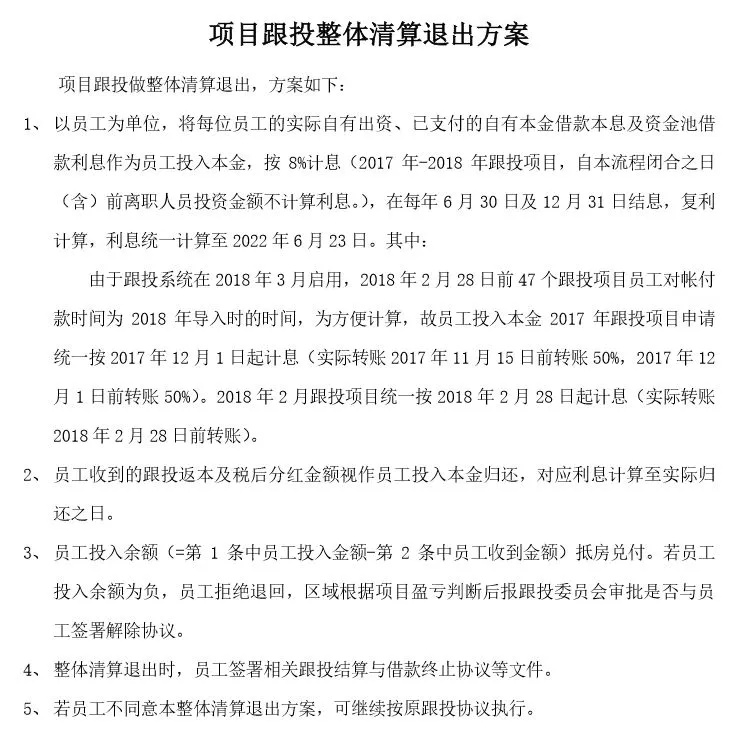

远航归来
掐指一算，离上次更新，过去了19天整。
跑一趟上海，把事情处理好，然后准备宅杭州。2月至今，经历了一些调整，编辑离职又复归、撤换商务代理团队、财经号搞定资质...
今天折腾了一天，搞定所有事情，于是准备更新了。饥肠辘辘开始码字，好饿。
你说“犹抱琵琶半遮面”，到我这都能听成“油爆枇杷伴着面”。
NO. 1｜壹
郑州 在推行楼市新政后，房地产市场依旧不景气，最近又推出了 房票安置的新政策。
按照货币安置、产权调换的政策，房子被拆迁后不 再 按面积赔付安置房，而是折算成等价的欠款，再以房票的形式出具给被征收人，被征收人拿着房票可以去郑州市区买房。
被征收人用房票购买的商品房，不计入家庭限购套数。购买过程中，如果房票的票面金额足以支付购房款，不得拆分使用；如果不足，可以申请商业贷和公积金贷。新房交付前，保留原址学区入学资格。
有效期一年，逾期未使用的，重新按照货币补偿方式进行安置。
郑州房价已连续十个月下跌，成交量快速下滑。市场下行明显，库存压力加大，百姓置业信心不足，烂尾楼项目时有发生，房企经营陷入困境。
建业等重仓河南的房企，过去一年很明显，日子过得尤其艰难。 不出意外地，建业在6月初引入国资，顺利染红。
在白衣骑士绝迹的当下，那个驾着七彩祥云，来救儿子于苦难的盖世英雄，通常是爸爸。
小时候每次吃饭，爸爸都喜欢给儿子讲很多道理。后来才知道，他是怕饭不够营养，给加点鸡汤。
爸爸希望儿子能把话听进去，毕竟他未来的收入还要靠儿子。但儿子没听进去，挑食，所以长得不太健康。
人人都想软着陆，人人都在脸着陆。
... ...
** 上海的豪宅热销、房租大幅度上涨 ** 。
不止上海，一些核心城市的豪宅都在上涨。接触了身边一些在抢豪宅的朋友，大多数情况是，企业经营和投资上不打算再投入了，手上的资金就用来买点好的房子，改善居住环境，或者抗通胀。
好地段的豪宅，向来都是硬通货。房子只是一个载体，重要的是 背后的资源值钱。
而刚改产品，今年普遍难卖，信心和预期不足是重要原因，背后还有就业和收入不稳定的原因。
“活着拼命”和“拼命活着”，一直都不同。
... ...
中谷物流公告称，拟以不超过 29亿元 的交易对价， 收购上海佳兆业金融中心 100%股权。
佳兆业，因2015年渡过危机，二次崛起，所以被有些人称为“不死凤凰”，类似于拼多多系统附体，1万人也砍不死我。
对买家来说，上海佳兆业金融中心这项资产以这个交易对价来说，很不错。如果放在一年前，这个价格想都别想。
有钱人终成眷属，没钱人亲眼目睹。
NO. 2｜贰
金科的物业公司 金科服务 公告称， 终止收购佳源服务73.56%股权 。
金科股份包括商标、银行账户、股权在内的多项资产被冻结，现金流持续恶化。物业公司又能好到哪去。
俩穷鬼搭台唱戏，各取所需，奈何观众来了，老爷没来，所以取消收购在意料之中，之前写的时候分析过了。
原本设想的剧情是： “大圣，此去欲何？”“踏南天，碎凌霄。”“如若一去不回……？”“便一去不回！”
结果剧本是：“大圣，此去欲何？”“踏南天，碎凌霄。”“如若一去不回……？”
“便不去了！”
头顶锅盖，脚踩白菜，自以为是东方不败，原来是乌龟红烧大白菜。
... ...
** 中国华融 ** （ 四大AMC之一） 发布公告称，拟 处置泰禾集团华东总部大厦，债权总额8.3亿元 。
十天前，泰禾刚 通 过融资性股权转让的方式， 将漳州的厦门湾项目转给兴业信托。兴业信托是泰禾集团的债权方，这应该是偿债性股权转让，以资产抵债。
这是信托公司在不得已的情况下，处置不良债权和不良股权投资的被动之举。
纵观泰禾吹牛×的历史，很有特色：总骗爸妈还有钱。
黄其森配合调查还没出来，今年的财报原本预计是动动手调数据盈利超亿元，结果是紧跟潮流巨额亏损。
理想和现实的不可调和，在赤裸裸上演， 理想： 如虎添亿。 现实： 入虎添疫。
... ...
** 远洋集团50亿元出售北京锐中心项目 ** 股权，平安人寿接手。
远洋过去几年，销售规模在大部队掉队，负债规模却紧跟大潮流。很多人想不明白它把钱花哪去了。
问就是花在拿地上了。女孩喜欢你不是因为你有钱，但是感动女孩的每个瞬间都要钱。
近一个月内，平安旗下的平安不动产已经对超过20家孙公司的股权进行了腾挪，由孙公司变成子公司。也是个很能折腾的主，关键是没见折腾出啥好结果来。
理想:少年远行如急雨，姑娘弹曲似私语。 现实:早上嘶嚎如杀猪，夜晚嘈嘈如锯树。
NO. 3｜叁
** 合景泰富 ** 正寻求整体出售写字楼，用偿还即将到期的债务，筹集资金在55-57亿元左右。
** 富力地产 ** 寻求10笔境外债展期，这10笔境外债未偿还本金总规模49.4亿美元。除了这10笔境外债，富力还有10笔存续的境内债，总规模161.65亿元。
截至2021年底，富力一年内到期的借款约583亿元，能动用的现金及现金等价物仅62.57亿元。
** 融创 ** 14.4亿元私募债拟展期两年，每半年支付一次本金。目前，融创仍无法与四大AMC就资产价格达成共识。
今年下半年，房地产行业全部1334家主体企业约有6448亿元境内外债券到期；6-7月，200家核心房企约有1755亿元债券到期，其中民营到期债券占比接近7成。
一两年前写民营房企潜在和未来面临的问题，有些人听不进去，如今，唉~
时间的绝情之处是，它让你熬到真相，却不给你任何补偿。
... ...
月初， 碧桂园 总裁莫斌回应区域合并的传言，称：今年年底之前，碧桂园没有大面积的区域合并计划。
至于会不会小面积合并、提升合并次数和频率，不好说。我持保留意见。
企业这类问题，通常具体要看经营中面临和存在的问题，才能决定合并的范围、规模。
他有不得不说的原因 ，我有不愿意相信的权力。 （ 我只是不愿相信，而没有 说他是错的 ）
有碧桂园的读者问，区域合并后会不会失业？我安慰他：没有收入很容易，但失业很难。
毕竟，有“灵活就业”和“返乡创业”这哥俩在。
... ...
** 融信 ** 的跟投清算退出方案出炉：

“如果你的孩子好看，别人就会夸他好看；如果你的孩子不好看，别人就会夸他长得像你。”
这份方案，长得真像欧总。
... ...
许家印被广东省河南商会推举为永远名誉会长。
许家印是该商会创会会长，也是现任会长。继许教授、许MVP、许首富、许主席...后，连会长这金冠都箍在了许家印的头上。
朋友说，中年女人为了刷存在感，拼命去保养、化妆、整容、P图；而中年男人就不同，中年男人主要靠吹牛。
以前我不懂，现在我懂了。 不知道恒大多次全面复工，究竟复工成色几何？多次”大干三个月“ 的恒驰，啥时候出来？
这速度，看着跟飞奔的驴一样：恒大造车何其速，恰如赤兔骑吕布。
... ...
今天又看了一遍《夏洛特烦恼》。
一年四季，大春一语知年少，夏洛一醒道青春，繁华只觉秋雅香，平淡才知冬梅好。我们的青春本是张扬，却被生活改造成了袁华。
喜欢写写东西，不到万不得已，不会断更。只是现在， 写得小心翼翼，也挺累的。
不小心不行，按现在有些人打拳的尺度：
司马光砸了缸，是在破坏公物；打虎的武松是捕杀野生动物；孔融让梨是道德绑架；卖炭翁是非法砍伐树木；
孟母三迁是炒作学区房概念；诸葛亮草船借箭算诈骗；女蜗补天扔余石是在浪费矿产资源；愚公移山是破坏大自然；孟姜女哭倒长城是破坏文物；
孔子弟子三千，没有教师资格证；华佗扁鹊会看病，没有行医资格证；卖火柴的小女孩，肯定是无证经营...
但我还是会继续写，继续往前看，往上看：伸手摘星，即便一无所获，也不至于满手污泥。
当你远航归来，总有故事可晒。
按日期浏览全部来源（同日按条目标识排序）